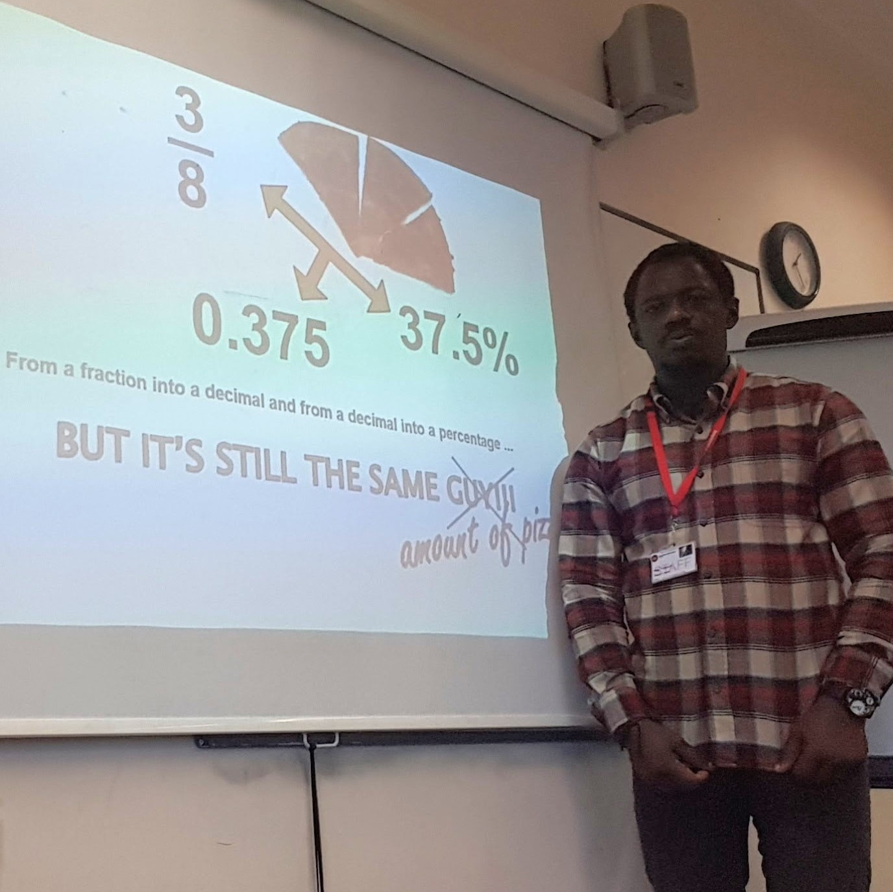
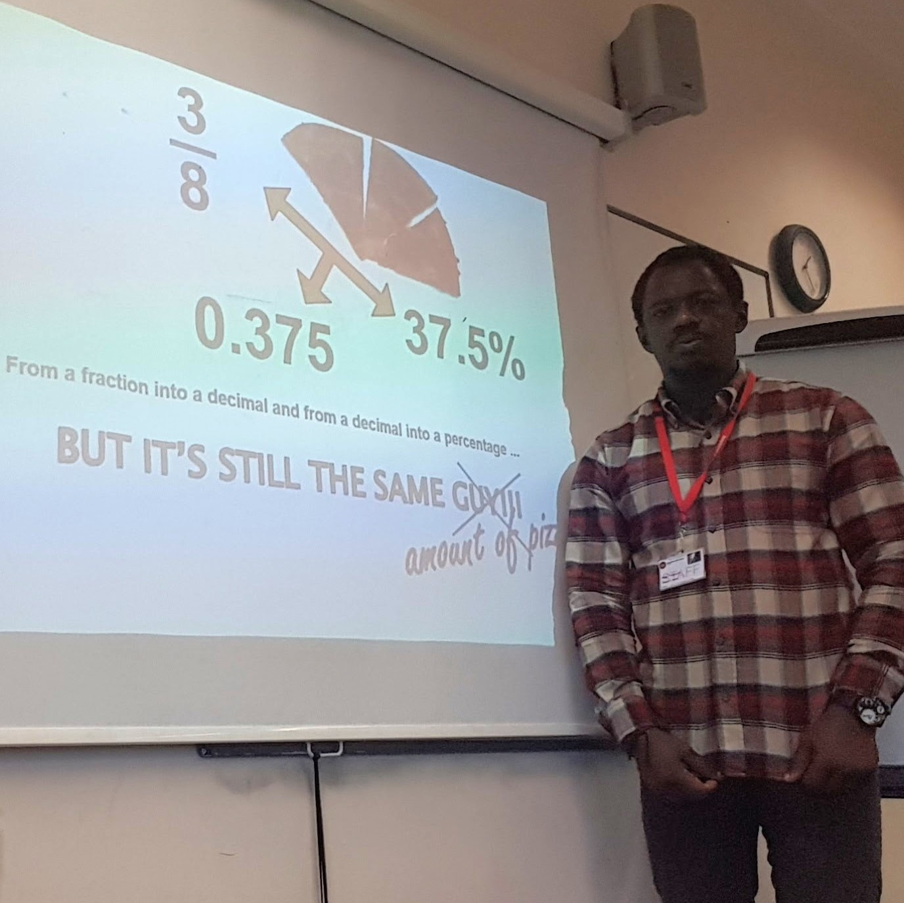

Welcome to my Portfolio website.
This is where you can know more about me and the progress on my
Software Development journey.

 

Hi, my name is Isaac and I'm passionately interested in Software
Development.
I have spent time in various careers that includes Civil
Service, Administration and Education, but I am determined to switch
careers to this one. I love the combination of creativity and
problem-solving that comes with building websites. I have always been
fascinated by technology, and software development will allow me to
bring ideas to life on the internet.
I am even more excited with the recent development in Artificial
Intelligence and Machine Learning. and I will really like to dig deep
into this.
I am married and blessed with three wonderful kids, and outside my day
job, I am also a Pastor in my church in Hackney. My hobbies include
listening to classical music, afro-gospel and nice reggae. I also like
running, doing at least three 5kms a week.
I want to pursue a career as a software developer because I believe it offers endless opportunities for growth and innovation. ICT is constantly evolving, and being a part of this dynamic field excites me. Especially, with the advent of AI. I enjoy working with HTML, CSS, and JavaScript, and I'm eager to continue learning and expanding my skills.
Here are some of the key skills and technologies I've learned:
If things work out, here is what I would like to get through this apprenticeship